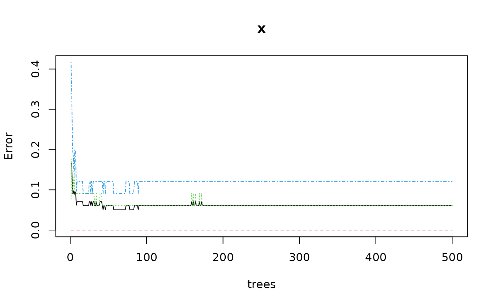
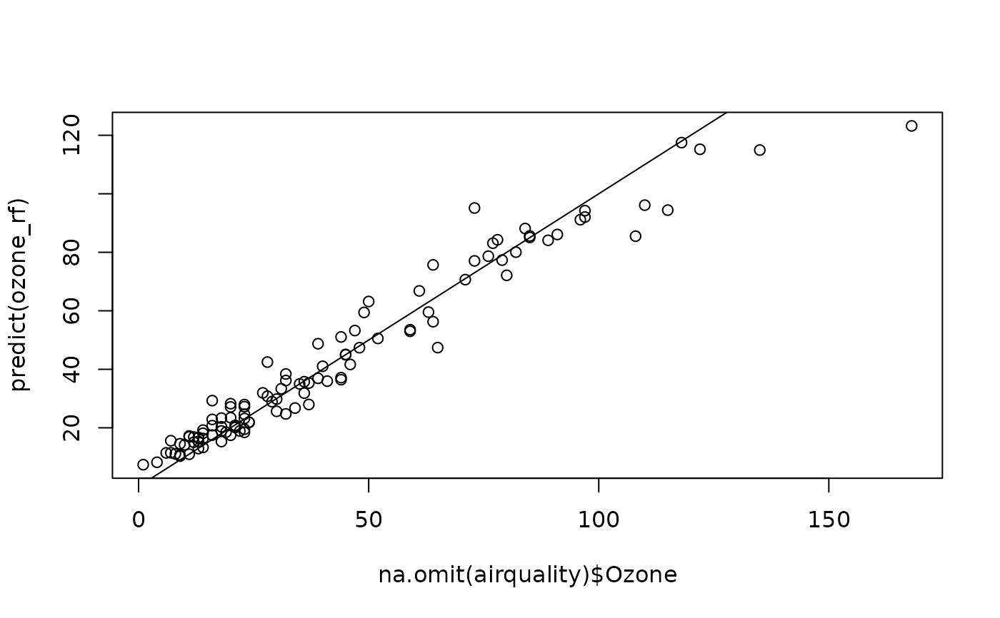
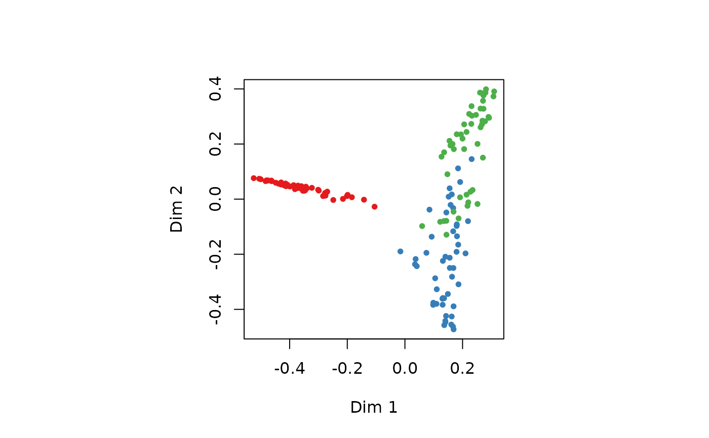
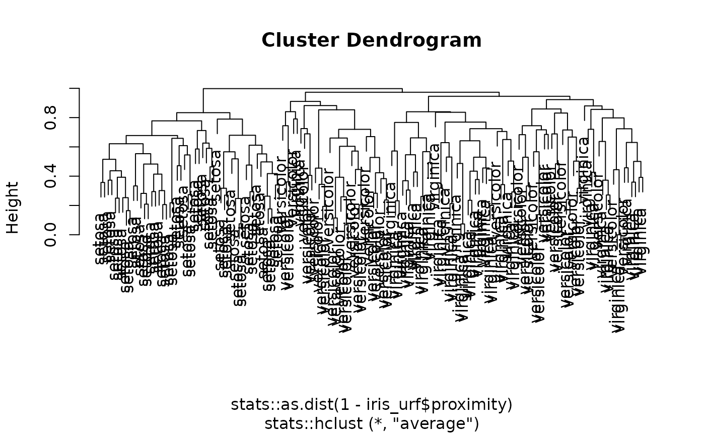

Unified (formula-based) interface version of the random forest algorithm
provided by randomForest::randomForest().
mlRforest(train, ...)
ml_rforest(train, ...)
# S3 method for class 'formula'
mlRforest(
formula,
data,
ntree = 500,
mtry,
replace = TRUE,
classwt = NULL,
...,
subset,
na.action
)
# Default S3 method
mlRforest(
train,
response,
ntree = 500,
mtry,
replace = TRUE,
classwt = NULL,
...
)
# S3 method for class 'mlRforest'
predict(
object,
newdata,
type = c("class", "membership", "both", "vote"),
method = c("direct", "oob", "cv"),
...
)Arguments
- train
a matrix or data frame with predictors.
- ...
further arguments passed to
randomForest::randomForest()or itspredict()method. There are many more arguments, see the corresponding help page.- formula
a formula with left term being the factor variable to predict (for supervised classification), a vector of numbers (for regression) or nothing (for unsupervised classification) and the right term with the list of independent, predictive variables, separated with a plus sign. If the data frame provided contains only the dependent and independent variables, one can use the
class ~ .short version (that one is strongly encouraged). Variables with minus sign are eliminated. Calculations on variables are possible according to usual formula convention (possibly protected by usingI()).- data
a data.frame to use as a training set.
- ntree
the number of trees to generate (use a value large enough to get at least a few predictions for each input row). Default is 500 trees.
- mtry
number of variables randomly sampled as candidates at each split. Note that the default values are different for classification (sqrt(p) where p is number of variables in x) and regression (p/3)?
- replace
sample cases with or without replacement (
TRUEby default)?- classwt
priors of the classes. Need not add up to one. Ignored for regression.
- subset
index vector with the cases to define the training set in use (this argument must be named, if provided).
- na.action
function to specify the action to be taken if
NAs are found. Forml_rforest()na.failis used by default. The calculation is stopped if there is anyNAin the data. Another option isna.omit, where cases with missing values on any required variable are dropped (this argument must be named, if provided). For thepredict()method, the default, and most suitable option, isna.exclude. In that case, rows withNAs innewdata=are excluded from prediction, but reinjected in the final results so that the number of items is still the same (and in the same order asnewdata=).- response
a vector of factor (classification) or numeric (regression), or
NULL(unsupervised classification).- object
an mlRforest object
- newdata
a new dataset with same conformation as the training set (same variables, except may by the class for classification or dependent variable for regression). Usually a test set, or a new dataset to be predicted.
- type
the type of prediction to return.
"class"by default, the predicted classes. Other options are"membership"the membership (number between 0 and 1) to the different classes as assessed by the number of neighbors of these classes, or"both"to return classes and memberships. One can also use"vote", which returns the number of trees that voted for each class.- method
"direct"(default),"oob"or"cv"."direct"predicts new cases innewdata=if this argument is provided, or the cases in the training set if not. Take care that not providingnewdata=means that you just calculate the self-consistency of the classifier but cannot use the metrics derived from these results for the assessment of its performances (in the case of Random Forest, these metrics would most certainly falsely indicate a perfect classifier). Either use a different data set innewdata=or use the alternate approaches: out-of-bag ("oob") or cross-validation ("cv"). The out-of-bag approach uses individuals that are not used to build the trees to assess performances. It is an unbiased estimates. If you specifymethod = "cv"thencvpredict()is used and you cannot providenewdata=in that case.
Value
ml_rforest()/mlRforest() creates an mlRforest, mlearning
object containing the classifier and a lot of additional metadata used by
the functions and methods you can apply to it like predict() or
cvpredict(). In case you want to program new functions or extract
specific components, inspect the "unclassed" object using unclass().
See also
mlearning(), cvpredict(), confusion(), also
randomForest::randomForest() that actually does the classification.
Examples
# Prepare data: split into training set (2/3) and test set (1/3)
data("iris", package = "datasets")
train <- c(1:34, 51:83, 101:133)
iris_train <- iris[train, ]
iris_test <- iris[-train, ]
# One case with missing data in train set, and another case in test set
iris_train[1, 1] <- NA
iris_test[25, 2] <- NA
iris_rf <- ml_rforest(data = iris_train, Species ~ .)
summary(iris_rf)
#> A mlearning object of class mlRforest (random forest):
#> Initial call: mlRforest.formula(formula = Species ~ ., data = iris_train)
#>
#> Call:
#> randomForest(x = train, y = response, ntree = ntree, replace = replace, classwt = classwt, .args. = ..1)
#> Type of random forest: classification
#> Number of trees: 500
#> No. of variables tried at each split: 2
#>
#> OOB estimate of error rate: 6.06%
#> Confusion matrix:
#> setosa versicolor virginica class.error
#> setosa 33 0 0 0.00000000
#> versicolor 0 31 2 0.06060606
#> virginica 0 4 29 0.12121212
plot(iris_rf) # Useful to look at the effect of ntree=

# For such a relatively simple case, 50 trees are enough
iris_rf <- ml_rforest(data = iris_train, Species ~ ., ntree = 50)
summary(iris_rf)
#> A mlearning object of class mlRforest (random forest):
#> Initial call: mlRforest.formula(formula = Species ~ ., data = iris_train, ntree = 50)
#>
#> Call:
#> randomForest(x = train, y = response, ntree = ntree, replace = replace, classwt = classwt, .args. = ..1)
#> Type of random forest: classification
#> Number of trees: 50
#> No. of variables tried at each split: 2
#>
#> OOB estimate of error rate: 5.05%
#> Confusion matrix:
#> setosa versicolor virginica class.error
#> setosa 33 0 0 0.00000000
#> versicolor 0 31 2 0.06060606
#> virginica 0 3 30 0.09090909
predict(iris_rf) # Default type is class
#> [1] setosa setosa setosa setosa setosa setosa
#> [7] setosa setosa setosa setosa setosa setosa
#> [13] setosa setosa setosa setosa setosa setosa
#> [19] setosa setosa setosa setosa setosa setosa
#> [25] setosa setosa setosa setosa setosa setosa
#> [31] setosa setosa setosa versicolor versicolor versicolor
#> [37] versicolor versicolor versicolor versicolor versicolor versicolor
#> [43] versicolor versicolor versicolor versicolor versicolor versicolor
#> [49] versicolor versicolor versicolor versicolor versicolor versicolor
#> [55] versicolor versicolor versicolor versicolor versicolor versicolor
#> [61] versicolor versicolor versicolor versicolor versicolor versicolor
#> [67] virginica virginica virginica virginica virginica virginica
#> [73] virginica virginica virginica virginica virginica virginica
#> [79] virginica virginica virginica virginica virginica virginica
#> [85] virginica virginica virginica virginica virginica virginica
#> [91] virginica virginica virginica virginica virginica virginica
#> [97] virginica virginica virginica
#> Levels: setosa versicolor virginica
predict(iris_rf, type = "membership")
#> setosa versicolor virginica
#> 2 1 0.00 0.00
#> 3 1 0.00 0.00
#> 4 1 0.00 0.00
#> 5 1 0.00 0.00
#> 6 1 0.00 0.00
#> 7 1 0.00 0.00
#> 8 1 0.00 0.00
#> 9 1 0.00 0.00
#> 10 1 0.00 0.00
#> 11 1 0.00 0.00
#> 12 1 0.00 0.00
#> 13 1 0.00 0.00
#> 14 1 0.00 0.00
#> 15 1 0.00 0.00
#> 16 1 0.00 0.00
#> 17 1 0.00 0.00
#> 18 1 0.00 0.00
#> 19 1 0.00 0.00
#> 20 1 0.00 0.00
#> 21 1 0.00 0.00
#> 22 1 0.00 0.00
#> 23 1 0.00 0.00
#> 24 1 0.00 0.00
#> 25 1 0.00 0.00
#> 26 1 0.00 0.00
#> 27 1 0.00 0.00
#> 28 1 0.00 0.00
#> 29 1 0.00 0.00
#> 30 1 0.00 0.00
#> 31 1 0.00 0.00
#> 32 1 0.00 0.00
#> 33 1 0.00 0.00
#> 34 1 0.00 0.00
#> 51 0 1.00 0.00
#> 52 0 1.00 0.00
#> 53 0 0.90 0.10
#> 54 0 0.98 0.02
#> 55 0 1.00 0.00
#> 56 0 1.00 0.00
#> 57 0 0.92 0.08
#> 58 0 0.92 0.08
#> 59 0 1.00 0.00
#> 60 0 0.98 0.02
#> 61 0 0.98 0.02
#> 62 0 1.00 0.00
#> 63 0 0.96 0.04
#> 64 0 1.00 0.00
#> 65 0 1.00 0.00
#> 66 0 1.00 0.00
#> 67 0 1.00 0.00
#> 68 0 1.00 0.00
#> 69 0 0.94 0.06
#> 70 0 1.00 0.00
#> 71 0 0.70 0.30
#> 72 0 1.00 0.00
#> 73 0 0.86 0.14
#> 74 0 1.00 0.00
#> 75 0 1.00 0.00
#> 76 0 1.00 0.00
#> 77 0 0.96 0.04
#> 78 0 0.68 0.32
#> 79 0 1.00 0.00
#> 80 0 1.00 0.00
#> 81 0 1.00 0.00
#> 82 0 1.00 0.00
#> 83 0 1.00 0.00
#> 101 0 0.00 1.00
#> 102 0 0.00 1.00
#> 103 0 0.00 1.00
#> 104 0 0.00 1.00
#> 105 0 0.00 1.00
#> 106 0 0.00 1.00
#> 107 0 0.44 0.56
#> 108 0 0.00 1.00
#> 109 0 0.02 0.98
#> 110 0 0.00 1.00
#> 111 0 0.06 0.94
#> 112 0 0.00 1.00
#> 113 0 0.00 1.00
#> 114 0 0.06 0.94
#> 115 0 0.02 0.98
#> 116 0 0.02 0.98
#> 117 0 0.00 1.00
#> 118 0 0.00 1.00
#> 119 0 0.02 0.98
#> 120 0 0.28 0.72
#> 121 0 0.00 1.00
#> 122 0 0.06 0.94
#> 123 0 0.00 1.00
#> 124 0 0.02 0.98
#> 125 0 0.00 1.00
#> 126 0 0.00 1.00
#> 127 0 0.14 0.86
#> 128 0 0.12 0.88
#> 129 0 0.00 1.00
#> 130 0 0.26 0.74
#> 131 0 0.00 1.00
#> 132 0 0.00 1.00
#> 133 0 0.00 1.00
predict(iris_rf, type = "both")
#> $class
#> [1] setosa setosa setosa setosa setosa setosa
#> [7] setosa setosa setosa setosa setosa setosa
#> [13] setosa setosa setosa setosa setosa setosa
#> [19] setosa setosa setosa setosa setosa setosa
#> [25] setosa setosa setosa setosa setosa setosa
#> [31] setosa setosa setosa versicolor versicolor versicolor
#> [37] versicolor versicolor versicolor versicolor versicolor versicolor
#> [43] versicolor versicolor versicolor versicolor versicolor versicolor
#> [49] versicolor versicolor versicolor versicolor versicolor versicolor
#> [55] versicolor versicolor versicolor versicolor versicolor versicolor
#> [61] versicolor versicolor versicolor versicolor versicolor versicolor
#> [67] virginica virginica virginica virginica virginica virginica
#> [73] virginica virginica virginica virginica virginica virginica
#> [79] virginica virginica virginica virginica virginica virginica
#> [85] virginica virginica virginica virginica virginica virginica
#> [91] virginica virginica virginica virginica virginica virginica
#> [97] virginica virginica virginica
#> Levels: setosa versicolor virginica
#>
#> $membership
#> setosa versicolor virginica
#> 2 1 0.00 0.00
#> 3 1 0.00 0.00
#> 4 1 0.00 0.00
#> 5 1 0.00 0.00
#> 6 1 0.00 0.00
#> 7 1 0.00 0.00
#> 8 1 0.00 0.00
#> 9 1 0.00 0.00
#> 10 1 0.00 0.00
#> 11 1 0.00 0.00
#> 12 1 0.00 0.00
#> 13 1 0.00 0.00
#> 14 1 0.00 0.00
#> 15 1 0.00 0.00
#> 16 1 0.00 0.00
#> 17 1 0.00 0.00
#> 18 1 0.00 0.00
#> 19 1 0.00 0.00
#> 20 1 0.00 0.00
#> 21 1 0.00 0.00
#> 22 1 0.00 0.00
#> 23 1 0.00 0.00
#> 24 1 0.00 0.00
#> 25 1 0.00 0.00
#> 26 1 0.00 0.00
#> 27 1 0.00 0.00
#> 28 1 0.00 0.00
#> 29 1 0.00 0.00
#> 30 1 0.00 0.00
#> 31 1 0.00 0.00
#> 32 1 0.00 0.00
#> 33 1 0.00 0.00
#> 34 1 0.00 0.00
#> 51 0 1.00 0.00
#> 52 0 1.00 0.00
#> 53 0 0.90 0.10
#> 54 0 0.98 0.02
#> 55 0 1.00 0.00
#> 56 0 1.00 0.00
#> 57 0 0.92 0.08
#> 58 0 0.92 0.08
#> 59 0 1.00 0.00
#> 60 0 0.98 0.02
#> 61 0 0.98 0.02
#> 62 0 1.00 0.00
#> 63 0 0.96 0.04
#> 64 0 1.00 0.00
#> 65 0 1.00 0.00
#> 66 0 1.00 0.00
#> 67 0 1.00 0.00
#> 68 0 1.00 0.00
#> 69 0 0.94 0.06
#> 70 0 1.00 0.00
#> 71 0 0.70 0.30
#> 72 0 1.00 0.00
#> 73 0 0.86 0.14
#> 74 0 1.00 0.00
#> 75 0 1.00 0.00
#> 76 0 1.00 0.00
#> 77 0 0.96 0.04
#> 78 0 0.68 0.32
#> 79 0 1.00 0.00
#> 80 0 1.00 0.00
#> 81 0 1.00 0.00
#> 82 0 1.00 0.00
#> 83 0 1.00 0.00
#> 101 0 0.00 1.00
#> 102 0 0.00 1.00
#> 103 0 0.00 1.00
#> 104 0 0.00 1.00
#> 105 0 0.00 1.00
#> 106 0 0.00 1.00
#> 107 0 0.44 0.56
#> 108 0 0.00 1.00
#> 109 0 0.02 0.98
#> 110 0 0.00 1.00
#> 111 0 0.06 0.94
#> 112 0 0.00 1.00
#> 113 0 0.00 1.00
#> 114 0 0.06 0.94
#> 115 0 0.02 0.98
#> 116 0 0.02 0.98
#> 117 0 0.00 1.00
#> 118 0 0.00 1.00
#> 119 0 0.02 0.98
#> 120 0 0.28 0.72
#> 121 0 0.00 1.00
#> 122 0 0.06 0.94
#> 123 0 0.00 1.00
#> 124 0 0.02 0.98
#> 125 0 0.00 1.00
#> 126 0 0.00 1.00
#> 127 0 0.14 0.86
#> 128 0 0.12 0.88
#> 129 0 0.00 1.00
#> 130 0 0.26 0.74
#> 131 0 0.00 1.00
#> 132 0 0.00 1.00
#> 133 0 0.00 1.00
#>
predict(iris_rf, type = "vote")
#> setosa versicolor virginica
#> 2 50 0 0
#> 3 50 0 0
#> 4 50 0 0
#> 5 50 0 0
#> 6 50 0 0
#> 7 50 0 0
#> 8 50 0 0
#> 9 50 0 0
#> 10 50 0 0
#> 11 50 0 0
#> 12 50 0 0
#> 13 50 0 0
#> 14 50 0 0
#> 15 50 0 0
#> 16 50 0 0
#> 17 50 0 0
#> 18 50 0 0
#> 19 50 0 0
#> 20 50 0 0
#> 21 50 0 0
#> 22 50 0 0
#> 23 50 0 0
#> 24 50 0 0
#> 25 50 0 0
#> 26 50 0 0
#> 27 50 0 0
#> 28 50 0 0
#> 29 50 0 0
#> 30 50 0 0
#> 31 50 0 0
#> 32 50 0 0
#> 33 50 0 0
#> 34 50 0 0
#> 51 0 50 0
#> 52 0 50 0
#> 53 0 45 5
#> 54 0 49 1
#> 55 0 50 0
#> 56 0 50 0
#> 57 0 46 4
#> 58 0 46 4
#> 59 0 50 0
#> 60 0 49 1
#> 61 0 49 1
#> 62 0 50 0
#> 63 0 48 2
#> 64 0 50 0
#> 65 0 50 0
#> 66 0 50 0
#> 67 0 50 0
#> 68 0 50 0
#> 69 0 47 3
#> 70 0 50 0
#> 71 0 35 15
#> 72 0 50 0
#> 73 0 43 7
#> 74 0 50 0
#> 75 0 50 0
#> 76 0 50 0
#> 77 0 48 2
#> 78 0 34 16
#> 79 0 50 0
#> 80 0 50 0
#> 81 0 50 0
#> 82 0 50 0
#> 83 0 50 0
#> 101 0 0 50
#> 102 0 0 50
#> 103 0 0 50
#> 104 0 0 50
#> 105 0 0 50
#> 106 0 0 50
#> 107 0 22 28
#> 108 0 0 50
#> 109 0 1 49
#> 110 0 0 50
#> 111 0 3 47
#> 112 0 0 50
#> 113 0 0 50
#> 114 0 3 47
#> 115 0 1 49
#> 116 0 1 49
#> 117 0 0 50
#> 118 0 0 50
#> 119 0 1 49
#> 120 0 14 36
#> 121 0 0 50
#> 122 0 3 47
#> 123 0 0 50
#> 124 0 1 49
#> 125 0 0 50
#> 126 0 0 50
#> 127 0 7 43
#> 128 0 6 44
#> 129 0 0 50
#> 130 0 13 37
#> 131 0 0 50
#> 132 0 0 50
#> 133 0 0 50
#> attr(,"class")
#> [1] "matrix" "array" "votes"
# Out-of-bag prediction (unbiased)
predict(iris_rf, method = "oob")
#> [1] setosa setosa setosa setosa setosa setosa
#> [7] setosa setosa setosa setosa setosa setosa
#> [13] setosa setosa setosa setosa setosa setosa
#> [19] setosa setosa setosa setosa setosa setosa
#> [25] setosa setosa setosa setosa setosa setosa
#> [31] setosa setosa setosa versicolor versicolor versicolor
#> [37] versicolor versicolor versicolor versicolor versicolor versicolor
#> [43] versicolor versicolor versicolor versicolor versicolor versicolor
#> [49] versicolor versicolor versicolor versicolor versicolor virginica
#> [55] versicolor versicolor versicolor versicolor versicolor versicolor
#> [61] virginica versicolor versicolor versicolor versicolor versicolor
#> [67] virginica virginica virginica virginica virginica virginica
#> [73] versicolor virginica virginica virginica virginica virginica
#> [79] virginica virginica virginica virginica virginica virginica
#> [85] virginica versicolor virginica virginica virginica virginica
#> [91] virginica virginica virginica virginica virginica versicolor
#> [97] virginica virginica virginica
#> attr(,"method")
#> attr(,"method")$name
#> [1] out-of-bag
#>
#> Levels: setosa versicolor virginica
# Self-consistency (always very high for random forest, biased, do not use!)
confusion(iris_rf)
#> 99 items classified with 99 true positives (error rate = 0%)
#> Predicted
#> Actual 01 02 03 (sum) (FNR%)
#> 01 virginica 33 0 0 33 0
#> 02 setosa 0 33 0 33 0
#> 03 versicolor 0 0 33 33 0
#> (sum) 33 33 33 99 0
# This one is better
confusion(iris_rf, method = "oob") # Out-of-bag performances
#> 99 items classified with 94 true positives (error rate = 5.1%)
#> Predicted
#> Actual 01 02 03 (sum) (FNR%)
#> 01 setosa 33 0 0 33 0
#> 02 versicolor 0 31 2 33 6
#> 03 virginica 0 3 30 33 9
#> (sum) 33 34 32 99 5
# Cross-validation prediction is also a good choice when there is no test set
predict(iris_rf, method = "cv") # Idem: cvpredict(res)
#> [1] setosa setosa setosa setosa setosa setosa
#> [7] setosa setosa setosa setosa setosa setosa
#> [13] setosa setosa setosa setosa setosa setosa
#> [19] setosa setosa setosa setosa setosa setosa
#> [25] setosa setosa setosa setosa setosa setosa
#> [31] setosa setosa setosa versicolor versicolor versicolor
#> [37] versicolor versicolor versicolor versicolor versicolor versicolor
#> [43] versicolor versicolor versicolor versicolor versicolor versicolor
#> [49] versicolor versicolor versicolor versicolor versicolor virginica
#> [55] versicolor versicolor versicolor versicolor versicolor versicolor
#> [61] virginica versicolor versicolor versicolor versicolor versicolor
#> [67] virginica virginica virginica virginica virginica virginica
#> [73] versicolor virginica virginica virginica virginica virginica
#> [79] virginica virginica virginica virginica virginica virginica
#> [85] virginica versicolor virginica virginica virginica virginica
#> [91] virginica virginica versicolor virginica virginica versicolor
#> [97] virginica virginica virginica
#> attr(,"method")
#>
#> Call:
#> cvpredict.mlearning(object = object, type = type)
#>
#> 10-fold cross-validation estimator of misclassification error
#>
#> Misclassification error: 0.0606
#>
#> Levels: setosa versicolor virginica
# Cross-validation for performances estimation
confusion(iris_rf, method = "cv")
#> 99 items classified with 95 true positives (error rate = 4%)
#> Predicted
#> Actual 01 02 03 (sum) (FNR%)
#> 01 setosa 33 0 0 33 0
#> 02 versicolor 0 31 2 33 6
#> 03 virginica 0 2 31 33 6
#> (sum) 33 33 33 99 4
# Evaluation of performances using a separate test set
confusion(predict(iris_rf, newdata = iris_test), iris_test$Species)
#> 50 items classified with 48 true positives (error rate = 4%)
#> Predicted
#> Actual 01 02 03 04 (sum) (FNR%)
#> 01 setosa 16 0 0 0 16 0
#> 02 NA 0 0 0 0 0
#> 03 versicolor 0 1 15 1 17 12
#> 04 virginica 0 0 0 17 17 0
#> (sum) 16 1 15 18 50 4
# Regression using random forest (from ?randomForest)
set.seed(131) # Useful for reproducibility (use a different number each time)
ozone_rf <- ml_rforest(data = airquality, Ozone ~ ., mtry = 3,
importance = TRUE, na.action = na.omit)
summary(ozone_rf)
#> A mlearning object of class mlRforest (random forest):
#> [regression variant]
#> Initial call: mlRforest.formula(formula = Ozone ~ ., data = airquality, mtry = 3, importance = TRUE, na.action = na.omit)
#>
#> Call:
#> randomForest(x = train, y = response, ntree = ntree, mtry = mtry, replace = replace, classwt = classwt, importance = TRUE, .args. = ..1)
#> Type of random forest: regression
#> Number of trees: 500
#> No. of variables tried at each split: 3
#>
#> Mean of squared residuals: 302.2117
#> % Var explained: 72.46
# Show "importance" of variables: higher value mean more important variables
round(randomForest::importance(ozone_rf), 2)
#> %IncMSE IncNodePurity
#> Solar.R 9.76 10741.33
#> Wind 22.15 44234.96
#> Temp 43.85 53787.56
#> Month 2.59 1692.48
#> Day 0.93 6606.39
plot(na.omit(airquality)$Ozone, predict(ozone_rf))
abline(a = 0, b = 1)

# Unsupervised classification using random forest (from ?randomForest)
set.seed(17)
iris_urf <- ml_rforest(train = iris[, -5]) # Use only quantitative data
summary(iris_urf)
#> A mlearning object of class mlRforest (random forest):
#> [unsupervised classification variant]
#> Initial call: mlRforest.default(train = iris[, -5])
#>
#> Call:
#> randomForest(x = train, y = response, ntree = ntree, replace = replace, classwt = classwt)
#> Type of random forest: unsupervised
#> Number of trees: 500
#> No. of variables tried at each split: 2
#>
randomForest::MDSplot(iris_urf, iris$Species)

plot(stats::hclust(stats::as.dist(1 - iris_urf$proximity),
method = "average"), labels = iris$Species)
